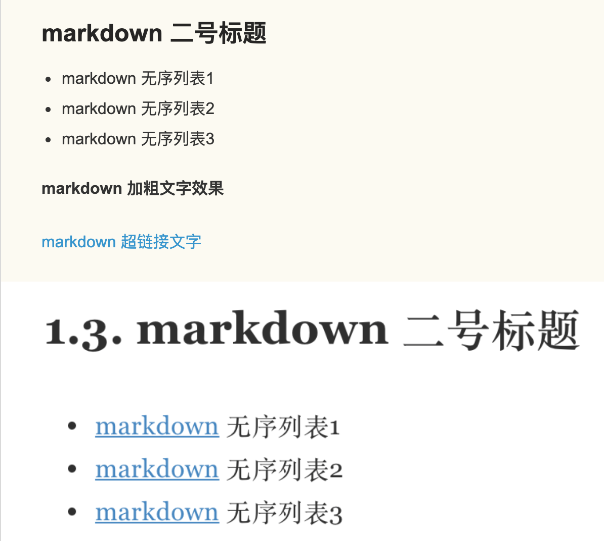
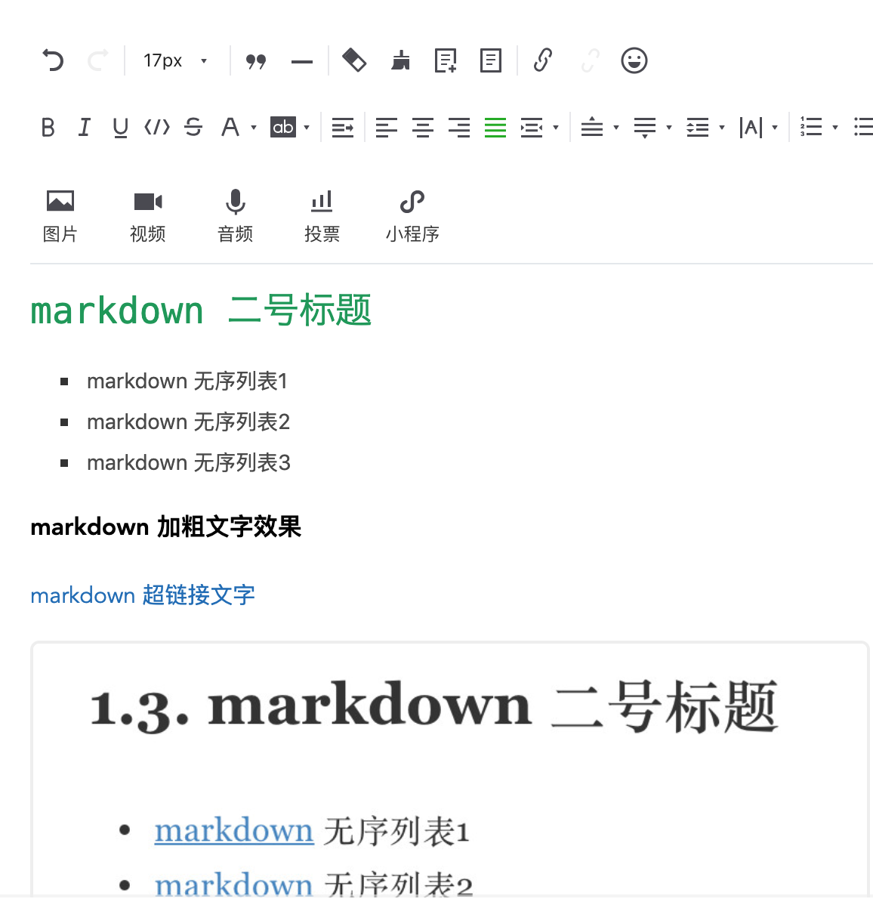

1. markdown和富文本
不知道你是否留意过平时写作时的编辑器,有的是 markdown 编辑器,有的是各种富文本编辑器,到底选择哪一个相信你有自己的判断.
如果只是在某一家平台上写作,哪一种编辑器都无所谓,只要你喜欢就好.
可是如果你需要同时发布到各个平台呢?此时,真的需要停下来思考一下,我该使用哪一种编辑器了?
各家的编辑器的界面设计风格迥然不同,不仅按钮排序顺序不一样,而且最终输出效果也不尽相同.
这就给我们带来了一个问题,明明已经排好版的文章,复制到另外一家平台样式不一样了,或者格式被清除了?!
心中一万只羊驼呼啸而过,尽管如此,还是在心里告诉自己要冷静,要冷静!
既然我们追求的一处编写,到处复制,那么我就有必要郑重向你推荐 markdown 编辑器.
简单地说,markdown 编辑器是一种标记语言,写的是源码,输出的是 html.
所以很多情况下, markdown 更适合技术人员写文章,不用关心排版布局,回归写作本质,而富文本格式适合文学工作者,强调布局美观,重视审美体验.
两者看似相互独立,实际上最终展示效果几乎太大差别, markdown 格式和富文本格式最终都输出 html
格式,毕竟绝大多数阅读媒介还是各种浏览器.
markdown语法支持嵌套html语法,从而可以实现较为复杂的排版布局.
1.1. markdown 格式
如果使用的是 markdown 格式编写文章,首先需要记忆常用的基本语法,半个小时足够入门写博客了,比txt 高级,比 html 简洁,取代 word 地位!
正是因为 markdown 语法规范,所以可以说是跨平台的写作语言,基本上各大主流的博客平台均支持 markdown 格式,保证了"一处编写,到处复制"的优良特性.
值得注意的是,不同平台对 markdown 格式的渲染结果稍有差异,甚至语法支持度不同,这要求我们尽量写通用语法或者因地制宜有针对性编写文章.
## markdown 二号标题
- markdown 无序列表1
- markdown 无序列表2
- markdown 无序列表3
**markdown 加粗文字效果**
[markdown 超链接文字](https://snowdreams1006.github.io/markdown/)


1.2. 富文本格式
平常熟悉的 word 编辑器可以理解为一种富文本格式,布局,标题,超链接,图片等均以控件的形式展示,需要填写标题了点一下按钮,需要加粗效果再点一下按钮,效果直观,不需要二次渲染,但不同的平台自然是不同的布局.
一家平台的布局还不一定能够完美复制到另一家平台,虽然适合大多数人,但可移植性差! 如果需要同时发布到多家平台,简直不敢相信,复制不了样式,需要重新排版等问题绝对是一种折磨.

1.3. 小结
markdown: 拥有编程经验,不关心排版布局,专注写作多家平台发表首选markdown编辑器,"一处编写,到处复制",可移植性好,最值渲染效果也不错!富文本格式: 可视化书写文章,无需编程经验的话,首选富文本编辑器,调整鼠标就能搞定页面布局还是很轻松的,同步更新到多家平台时,页面布局格式差强人意,后期维护难度大!
作者: 雪之梦技术驿站
来源: 雪之梦技术驿站
本文原创发布于「雪之梦技术驿站」,转载请注明出处,谢谢合作!